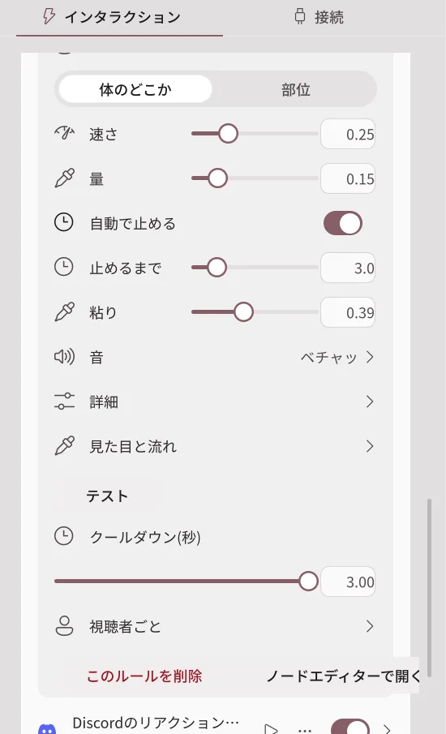
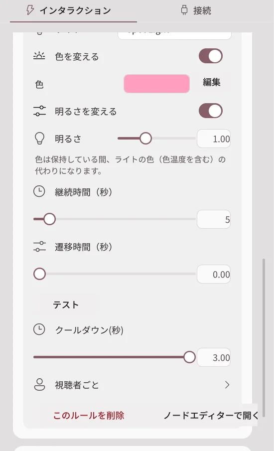
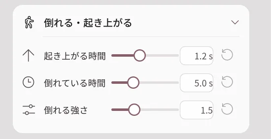
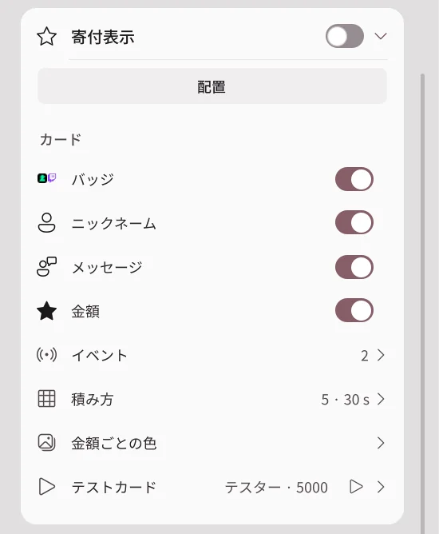
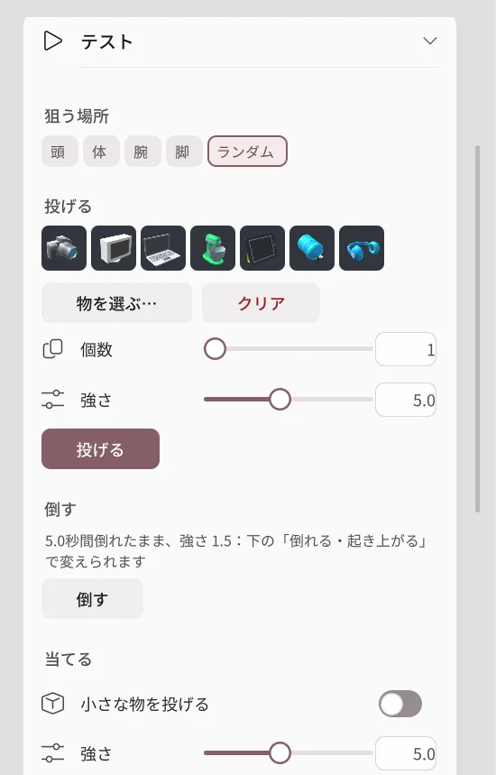

投げる・液体・倒れる
2.2.0 で追加された機能です。2.1.2 以前にはありません。
かんたん設定の項目とノードエディターが実行する、アバターの反応です。どのアバター・カメラでも使えます。配信連携の機能なのでProが必要で、現在はベータです。
投げる
小道具ライブラリの物をアバターに投げます。当たると、アバターは立ったまま押されてから元に戻ります。
| 設定 | できること |
|---|---|
| 物 | 投げる物をサムネイル・分類・検索で選びます。複数選ぶと、毎回その中から1つをランダムに投げます。 |
| 出発 | 画面外・端・頭上・顔の前のどこから飛んでくるかを決めます。 |
| 到着 | 体のどこか、または頭・胸・手などの部位を狙います。 |
| 速さ・重さ・サイズ | どれだけ速く強く当たるか、物の大きさを決めます。 |
| 個数 | 一度に投げる個数と間隔です。金額に応じてをオンにすると、ドネーションの金額ごとに個数が増えます。 |
| 音 | 投げた時・当たった時の音です。自分の音声ファイルも追加できます。 |
| エフェクト | 当たったときにインパクト・キラキラ・星・ほこり・ハート・しずく・紙吹雪のエフェクトを出します。 |
| 当たったときの表情 | 当たっている間の表情を選びます。 |
| 詳細 | 重力・回転・残る時間・当たったら消える・当たったらくっつくを決めます。 |
液体

水・ジュース・ミルク・はちみつ・スライム・インク・金から液体の種類を選んで、アバターにかけます。液体は当たった場所から体に沿って流れ落ち、アバターはしばらく濡れて見えたあと乾きます。
| 設定 | できること |
|---|---|
| 出発・到着 | 液体が出る場所と狙う場所です。顔の前からかけることもできます。 |
| 速さ・量 | どれだけ強く、どれだけ多くかけるかを決めます。 |
| 自動で止める・止めるまで | 決めた時間が過ぎると止まります。オフにすると、ルールか接続をオフにするまで出続けます。 |
| 粘り | 0なら水のように、1ならシロップのように流れます。 |
| 音 | かけるときと流れるときの音です。 |
| 見た目と流れ | 色・発光・反射・表面張力などの見た目の値です。流体を動かせないPCでは、簡単なしずくで描きます。 |
| 濡れた見た目 | 液体が触れた場所の濡れた見た目と、乾くまでの時間です。すべての液体に同じように適用され、初期設定では30秒後に乾きます。 |
ステッカー
自分の画像ファイルやフォルダー（その中からランダム）、オンラインの画像、動くGIF・APNG・WebPをアバターに貼ります。視聴者のプロフィール画像を選ぶと、イベントを送った視聴者の画像を受け取って貼ります。
照明

ライトを1つオン・オフ・反転したり、色・明るさ、エフェクト、プリセットを一時的に適用したりします。継続時間が過ぎると、自分のライティングに戻ります。継続時間は最短1秒です。
倒れる・起き上がる

強く当たったり倒すアクションが届いたりすると、アバターは床に倒れてから、ゆっくり起き上がります。配信 → インタラクション → 倒れる・起き上がるで設定します。
| 設定 | できること |
|---|---|
| 倒れる強さ | 倒れるときに後ろへ押される強さです。0ならその場でそのまま崩れ落ちます。 |
| 倒れている時間 | 起き上がるまで横になっている時間です。ノードで倒すときは、ノードの待ち時間を使います。 |
| 起き上がる時間 | 床から元の姿勢に起き上がるまでにかかる時間です。0ならすぐに起き上がります。 |
倒れられないアバターでは、テストで「このアバターは倒れられません」と表示されます。
寄付表示

寄付した人の名前とメッセージを、シーン内のボックスにカードで表示します。初期設定はオフです。
| 設定 | できること |
|---|---|
| 配置 | ボックスをシーンのオブジェクトのように動かし、サイズを変えます。 |
| カード | バッジ・ニックネーム・メッセージ・金額のうち、表示するものを選びます。 |
| イベント | CHZZKの寄付・Twitchビッツ・サブスク・チャンネルポイントのうち、表示するイベントです。 |
| 積み方 | カード数・表示時間・メッセージの長さ・最小金額です。 |
| 金額ごとの色 | 金額の範囲ごとにカードの色を変えます。 |
| テストカード | ニックネーム・メッセージ・金額を入れて、カードを1枚追加してみます。 |
テスト

配信 → インタラクションのいちばん下にあるテストカードで、ルールやイベントなしで反応をすぐに試します。ボタン1つで1回実行します。
| ボタン | できること |
|---|---|
| 投げる | 狙う場所・強さ・個数を決めて物を投げます。物を選ばないと、ライブラリからランダムに選びます。 |
| 倒す | アバターを倒します。 |
| 当てる | 選んだ部位に当たったときの反応を1回見せます。小さな物を投げるをオンにすると、物も飛んできます。 |
| 液体をかける | 量と方向（正面の顔へ・上から・左から・右から）を決めてかけます。 |
| ステッカー | 自分の画像から1枚をランダムに貼ります。 |
| 元に戻す | 浮いている物・液体・ステッカーを消し、アバターを元の姿勢に戻します。 |